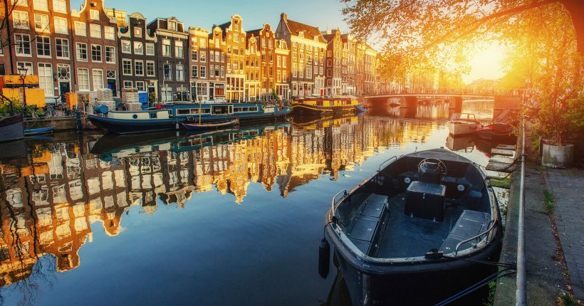

AMSTERDAM
Sobre Amsterdam
Amsterdã é capaz de encantar o visitante desde o primeiro momento e não são poucas as pessoas que aqui voltam várias e várias vezes. Um destino cheio de paisagens encantadoras, arquitetura de tirar o fôlego, ruas “cortadas” por ciclovias, canais e onde encontram-se pelo menos mil pontes.
Uma cidade com uma atmosfera incrível, cheia de história, romântica e com opções de entretenimento que agradam pessoas de todas as idades: museus como o Van Gogh e o Rijks, bares e restaurantes para todos os gostos, bairros vibrantes como o Jordaan e o De Pijp, parques como o Vondelpark, praças como a Ledseplein, a Dam e a Rembrandtplein, e festividades como O Dia do Rei (27 de abril), e muito mais
Afinal, Amsterdã é a capital dos Países Baixos ou da Holanda? Muita gente não sabe, mas Países Baixos é a denominação oficial. A explicação para o segundo nome (não oficial) é que realmente existiu uma província chamada Holanda inserida na região onde hoje se encontram os Países Baixos. Essa província surgiu como uma potência dominante no século XVII e por isso o nome é tão famoso no mundo todo, inclusive no Brasil. Atualmente, a região da antiga Holanda corresponde às províncias da Holanda do Sul e da Holanda do Norte (exatamente onde está Amsterdã).
Preço e Condições
Este pacote de viagem de 11 dias inlcui hotel, alimentação, translado e passeios turísticos!
POR INCRÍVEIS R$ 24.599,90